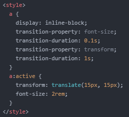

- Transition에 대해 알아보기 1
오늘은 Transition에 대해서 알아보려고 합니다.
Transition은 우리말로 '전환', '변이'라는 뜻입니다.
여기서는 효과의 전환으로 생각하시면 됩니다.
마우스를 가져다 댔는데 텍스트의 크기가 바뀐다든지, 색상이 바뀐다든지 말이죠.
바로 예시를 들어보겠습니다.
다음과 같은 코드를 작성합니다.
여기서 #은 아무런 의미가 없습니다.
Click을 누르면 이 텍스트의 위치가 바뀌도록 만들어보겠습니다.
참고로 지난번 transform 속성을 공부할 때 언급하지 않았었는데, 이 속성은 이를 적용하는 요소가 block element 혹은 inline-block element 일 때 사용할 수 있습니다.
그래서 inline 요소인 a 태그를 block 혹은 inline-block element로 바꿔준 것입니다.
마우스 커서를 가져다 대고 click 버튼을 누르면 transform 속성에 따라 가로, 세로 방향으로 각각 15px만큼 이동하는 것을 알 수 있습니다.
그런데 이를 연속으로 눌러보면 뭔가 부드럽게 눌리는 느낌이 없습니다.
이때! 부드러운 느낌 혹은 자연스러운 느낌을 줄 수 있게 하는 것이 바로 'Transition' 입니다.
다음과 같이 코드를 작성합니다.
'transition-property: all;'은 모든 속성에 대해 transtion을 적용하겠다는 의미입니다.
만약 여러 속성이 있고 그중에서 한 속성에만 transition을 적용하겠다고 하면, 'transition-property: 속성 이름;'과 같이 작성하면 됩니다.
복수의 속성에 적용하고자 한다면 콤마(,)로 구분 지어주면 됩니다.
'transition-duration: 1s;'은 transition이 지정된 시간 동안 지속된다는 의미입니다.
Click을 누르고 있으면 1초 동안 자연스럽게 효과가 지속되는 것을 알 수 있습니다.
이번에는 텍스트의 크기도 바꿔보겠습니다.
참고로 'transition: all 1s;'과 같이 한 줄로 작성할 수도 있습니다.
Click을 누르고 있으면 1초 동안 텍스트의 크기가 커지면서 위치도 바뀌는 것을 알 수 있습니다.
이번에는 텍스트의 크기는 0.1초 동안 커지고 위치는 1초 동안 바뀌게 해보겠습니다.
Click을 누르고 있으면 텍스트의 크기가 0.1초 만에 커지고 위치는 1초 동안 바뀌는 것을 알 수 있습니다.
그리고 위에서 말했듯, 다음과 같이 한 줄로 코드를 입력할 수도 있습니다.
그럼 오늘은 여기까지 하겠습니다.
내일도 화이팅!